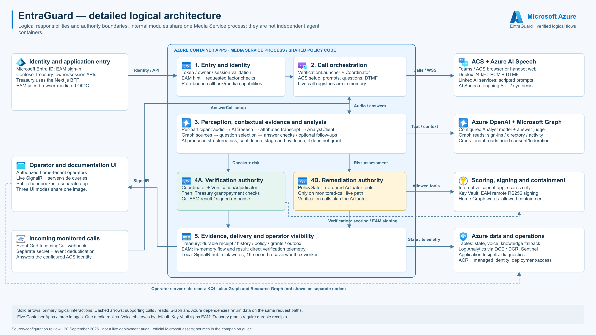
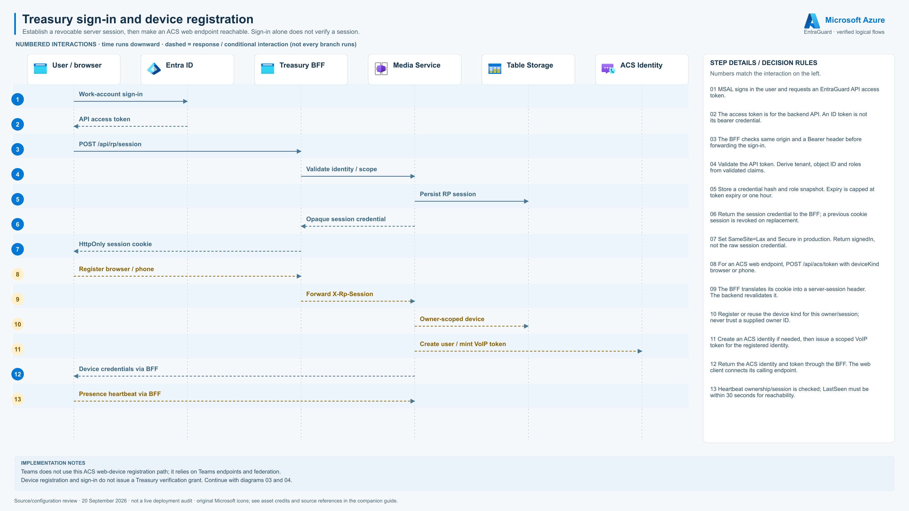
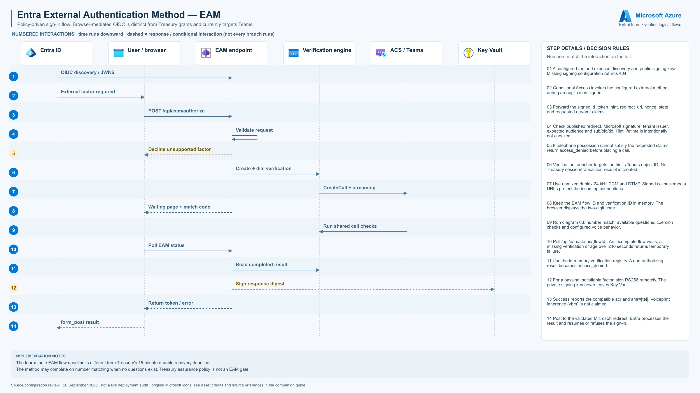
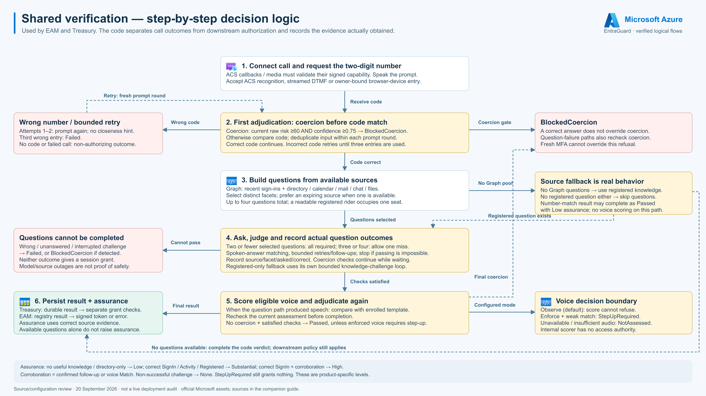
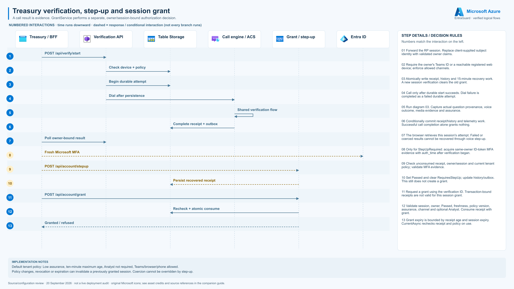
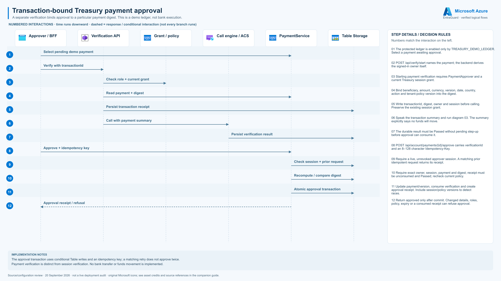
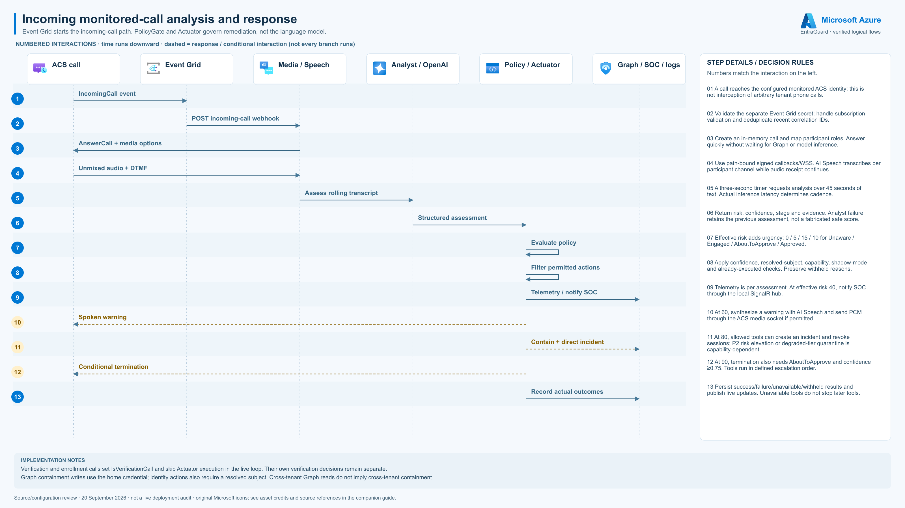
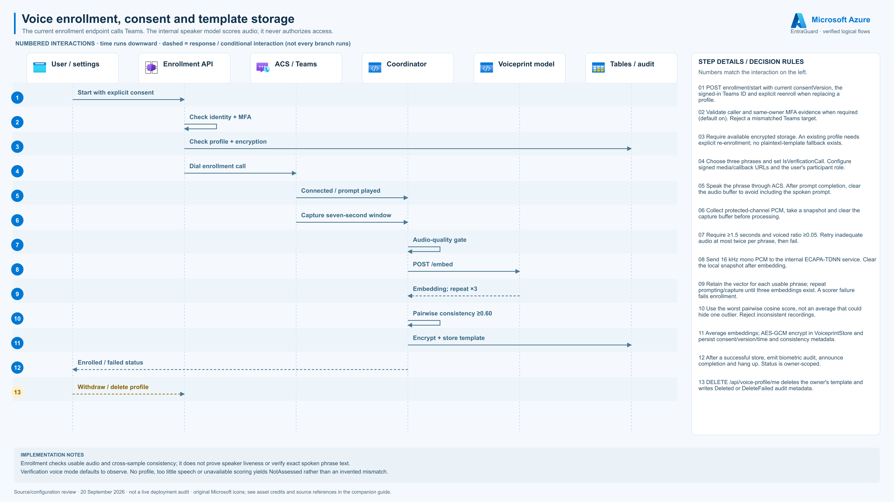
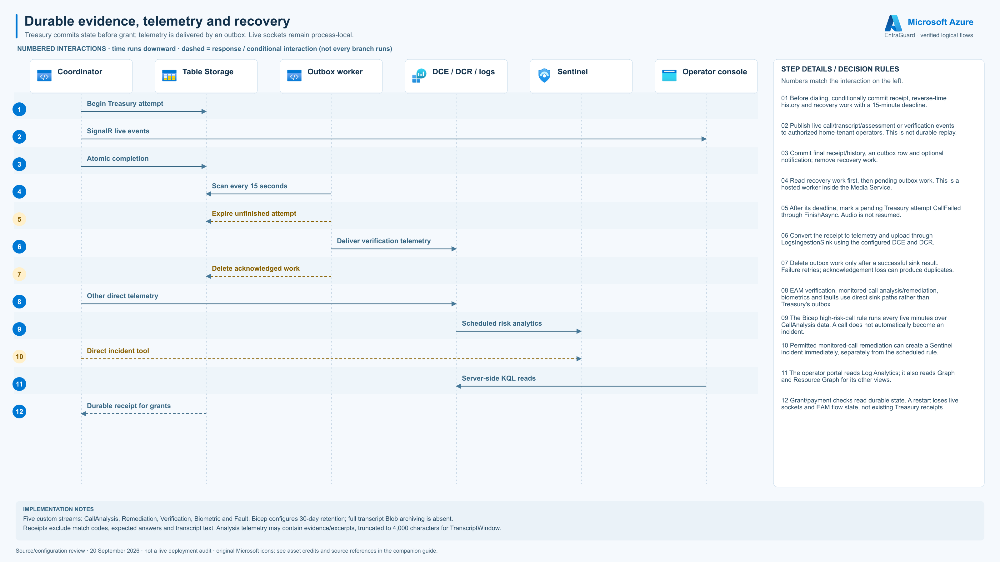

EntraGuard — detailed logical and step-by-step flows
Source-verified · 20 September 2026 · official Microsoft architecture assets · 3200 × 1800 PNG + standalone SVG.
Step-by-step guide and source evidence · Asset credits
00 · EntraGuard — detailed logical architecture
Logical responsibilities and authority boundaries. Internal modules share one Media Service process; they are not independent agent containers.
Download PNG · Download SVG

- Solid arrows: primary logical interactions. Dashed arrows: supporting calls / reads. Graph and Azure dependencies return data on the same request paths.
- Five Container Apps / three images. One media replica. Voice observes by default. Key Vault signs EAM; Treasury grants require durable receipts.
01 · Treasury sign-in and device registration
Establish a revocable server session, then make an ACS web endpoint reachable. Sign-in alone does not verify a session.
Download PNG · Download SVG

- Teams does not use this ACS web-device registration path; it relies on Teams endpoints and federation.
- Device registration and sign-in do not issue a Treasury verification grant. Continue with diagrams 03 and 04.
02 · Entra External Authentication Method — EAM
Policy-driven sign-in flow. Browser-mediated OIDC is distinct from Treasury grants and currently targets Teams.
Download PNG · Download SVG

- The four-minute EAM flow deadline is different from Treasury's 15-minute durable recovery deadline.
- The method may complete on number matching when no questions exist. Treasury assurance policy is not an EAM gate.
03 · Shared verification — step-by-step decision logic
Used by EAM and Treasury. The code separates call outcomes from downstream authorization and records the evidence actually obtained.
Download PNG · Download SVG

- Assurance: no useful knowledge / directory-only → Low; correct SignIn / Activity / Registered → Substantial; correct SignIn + corroboration → High.
- Corroboration = confirmed follow-up or voice Match. Non-successful challenge → None. StepUpRequired still grants nothing. These are product-specific levels.
04 · Treasury verification, step-up and session grant
A call result is evidence. GrantService performs a separate, owner/session-bound authorization decision.
Download PNG · Download SVG

- Default tenant policy: Low assurance, ten-minute maximum age, Analyst not required, Teams/browser/phone allowed.
- Policy changes, revocation or expiration can invalidate a previously granted session. Coercion cannot be overridden by step-up.
05 · Transaction-bound Treasury payment approval
A separate verification binds approval to a particular payment digest. This is a demo ledger, not bank execution.
Download PNG · Download SVG

- The approval transaction uses conditional Table writes and an idempotency key; a matching retry does not approve twice.
- Payment verification is distinct from session verification. No bank transfer or funds movement is implemented.
06 · Incoming monitored-call analysis and response
Event Grid starts the incoming-call path. PolicyGate and Actuator govern remediation, not the language model.
Download PNG · Download SVG

- Verification and enrollment calls set IsVerificationCall and skip Actuator execution in the live loop. Their own verification decisions remain separate.
- Graph containment writes use the home credential; identity actions also require a resolved subject. Cross-tenant Graph reads do not imply cross-tenant containment.
07 · Voice enrollment, consent and template storage
The current enrollment endpoint calls Teams. The internal speaker model scores audio; it never authorizes access.
Download PNG · Download SVG

- Enrollment checks usable audio and cross-sample consistency; it does not prove speaker liveness or verify exact spoken phrase text.
- Verification voice mode defaults to observe. No profile, too little speech or unavailable scoring yields NotAssessed rather than an invented mismatch.
08 · Durable evidence, telemetry and recovery
Treasury commits state before grant; telemetry is delivered by an outbox. Live sockets remain process-local.
Download PNG · Download SVG

- Five custom streams: CallAnalysis, Remediation, Verification, Biometric and Fault. Bicep configures 30-day retention; full transcript Blob archiving is absent.
- Receipts exclude match codes, expected answers and transcript text. Analysis telemetry may contain evidence/excerpts, truncated to 4,000 characters for TranscriptWindow.